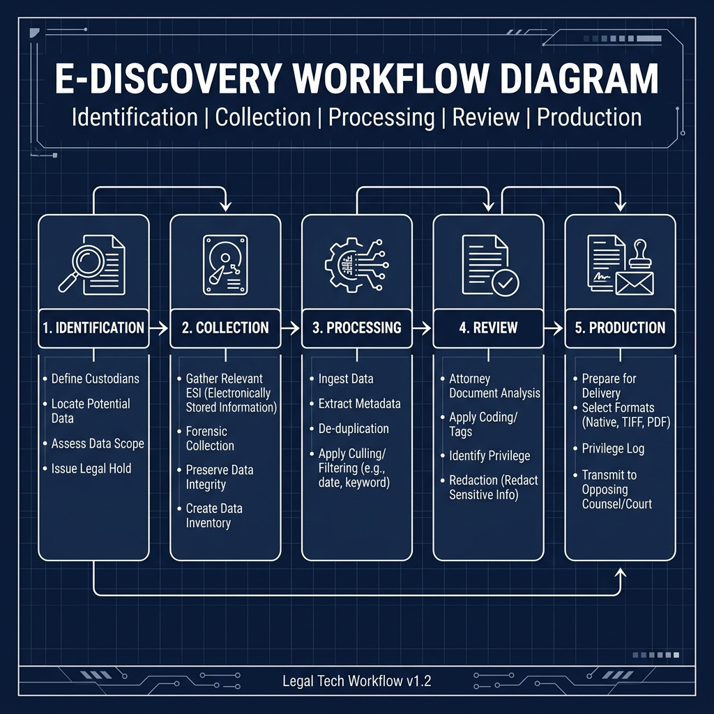
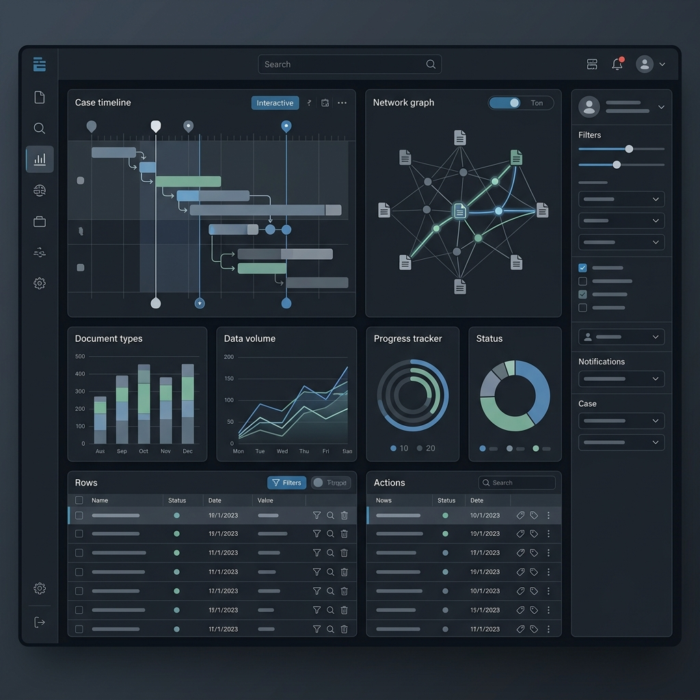

Our proprietary methodology ensures that every byte of data is handled with legal rigor and technical precision.

We begin by auditing the existing data landscape and aligning our technical tools with the specific legal objectives of the case. This initial discovery phase is critical for establishing the technical boundaries and ensuring that the collection strategy is both proportionate and defensible under judicial scrutiny.
Comprehensive evaluation of data sources, file types, and custodial counts to eliminate potential blind spots in the collection process.
Strategic deployment of specific analytical engines, including TAR (Technology Assisted Review) and CAL, tailored to the data's complexity.
Early identification of sensitive or privileged material to prevent inadvertent disclosure during subsequent processing phases.
Once the data has been culled and reviewed, we transition into the technical validation phase. We perform rigorous quality checks on load files and metadata exports to ensure 100% compliance with production specifications, preventing costly re-productions and technical challenges during discovery.
Automated scripts verify the consistency of cross-referenced metadata fields across all production sets.
Tailored export formats (PDF, TIFF, or Native) optimized for various document review platforms (Relativity, Reveal, etc.).
Detailed reporting on culling rates, deduplication statistics, and chain-of-custody logs for judicial submission.

We leverage a best-in-class stack of e-discovery tools and secure cloud infrastructure to ensure high-performance processing and 99.9% uptime.
High-speed processing engines capable of handling multi-terabyte data sets with minimal latency.
Data encryption at rest and in transit, hosted in SOC 2 Type II compliant data centers.
Secure, web-based access for distributed legal teams, enabling collaboration from any jurisdiction.